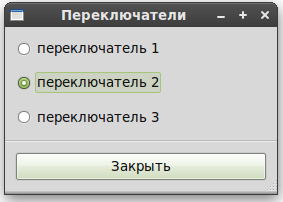

Кнопки одиночного выбора (RadioButton, они же: переключатели) во многом похожи на кнопки множественного выбора (CheckButton) за тем исключением, что они группируются, и одновременно может быть включен только один переключатель. Именно это свойство позволяет их полноценно называть ПЕРЕключатели. Они удобны, когда в вашем приложении необходимо выбрать одно значение из короткого списка опций.
Создание нового переключателя выполняется этим вызовом:
|
radio_button = gtk.RadioButton(group=None, label=None) |
Вы должны были заметить в этом вызове дополнительный аргумент. Виджету RadioButton для работы требуется аргумент group. Первый вызов к gtk.RadioButton() должен передавать None как первый аргумент, тогда создаётся новая группа переключателей, в которой будет только созданный RadioButton.
Для того чтобы добавить больше RadioButton, передайте ссылку на другой RadioButton (включённый в нужную группу) в вызове RadioButton().
Если в аргументе label указан текст, то он проверяется на префикс ‘_’ для мнемонических команд.
Также хорошей идеей будет явно выбирать, какой переключатель будет включен по умолчанию, с помощью:
|
radio_button.set_active(is_active) |
Этот метод объясняется в разделе о кнопках-выключателях (ToggleButton), и работает аналогично. Когда переключатели одиночного выбора сгруппированы вместе, одновременно может быть активен только один из группы. Если пользователь совершает щелчок по RadioButton, тогда сначала первый RadioButton излучает сигнал “toggled” (сообщает о выключении), и тогда сигнал “toggled” излучает вторая кнопка (сообщает о включении).
Программа-пример radiobuttons.py создаёт группу из трёх переключателей. Рисунок 6.4, “Пример использования RadioButton” показывает полученное окно:
Рисунок 6.4. Пример использования RadioButton

Исходный код программы:
|
1 2 3 4 5 6 7 8 9 10 11 12 13 14 15 16 17 18 19 20 21 22 23 24 25 26 27 28 29 30 31 32 33 34 35 36 37 38 39 40 41 42 43 44 45 46 47 48 49 50 51 52 53 54 55 56 57 58 59 60 61 62 63 64 65 66 67 68 69 70 71 72 73 74 |
#!/usr/bin/env python # --*-- coding:utf-8 --*-- # example radiobuttons.py
import pygtk pygtk.require('2.0') import gtk
class RadioButtons: def callback(self, widget, data=None): print "%s было нажато %s" % (data, ("OFF", "ON")[widget.get_active()])
def close_application(self, widget, event, data=None): gtk.main_quit() return False
def __init__(self): self.window = gtk.Window(gtk.WINDOW_TOPLEVEL)
self.window.connect("delete_event", self.close_application)
self.window.set_title("Переключатели") self.window.set_border_width(0)
box1 = gtk.VBox(False, 0) self.window.add(box1) box1.show()
box2 = gtk.VBox(False, 10) box2.set_border_width(10) box1.pack_start(box2, True, True, 0) box2.show()
button = gtk.RadioButton(None, "переключатель 1") button.connect("toggled", self.callback, "переключатель 1") box2.pack_start(button, True, True, 0) button.show()
button = gtk.RadioButton(button, "переключатель 2") button.connect("toggled", self.callback, "переключатель 2") button.set_active(True) box2.pack_start(button, True, True, 0) button.show()
button = gtk.RadioButton(button, "переключатель 3") button.connect("toggled", self.callback, "переключатель 3") box2.pack_start(button, True, True, 0) button.show()
separator = gtk.HSeparator() box1.pack_start(separator, False, True, 0) separator.show()
box2 = gtk.VBox(False, 10) box2.set_border_width(10) box1.pack_start(box2, False, True, 0) box2.show()
button = gtk.Button("Закрыть") button.connect_object("clicked", self.close_application, self.window, None) box2.pack_start(button, True, True, 0) button.set_flags(gtk.CAN_DEFAULT) button.grab_default() button.show() self.window.show()
def main(): gtk.main() return 0
if __name__ == "__main__": RadioButtons() main() |
Этот код довольно прост. Строки 63-64 делают кнопку “Закрыть” виджетом по умолчанию, так, если окно активно, по нажатию клавиши “Enter” заставит кнопку “Закрыть” излучить сигнал “clicked”.